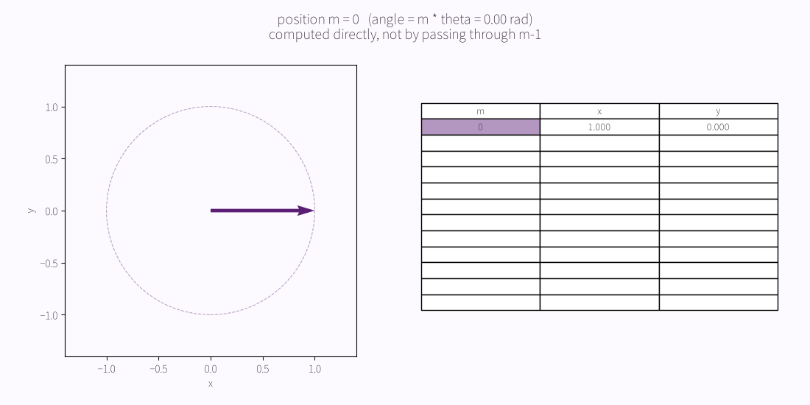
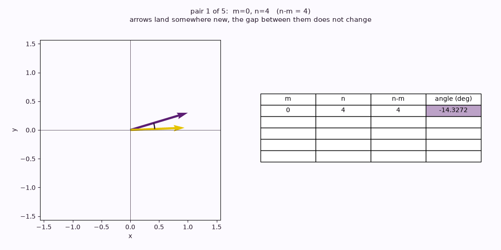
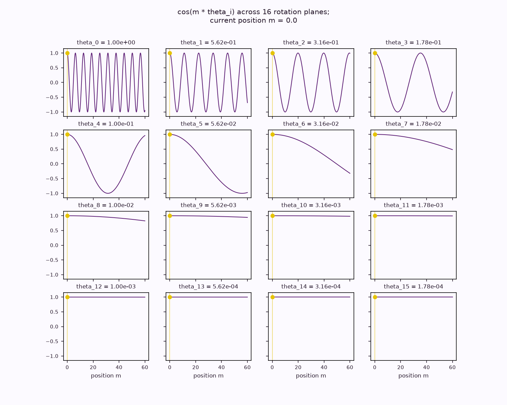
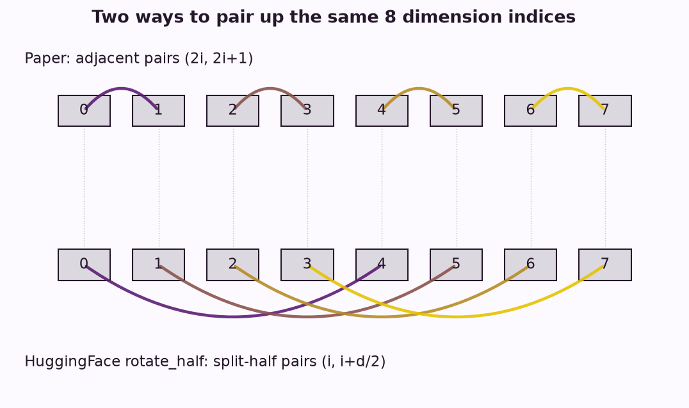
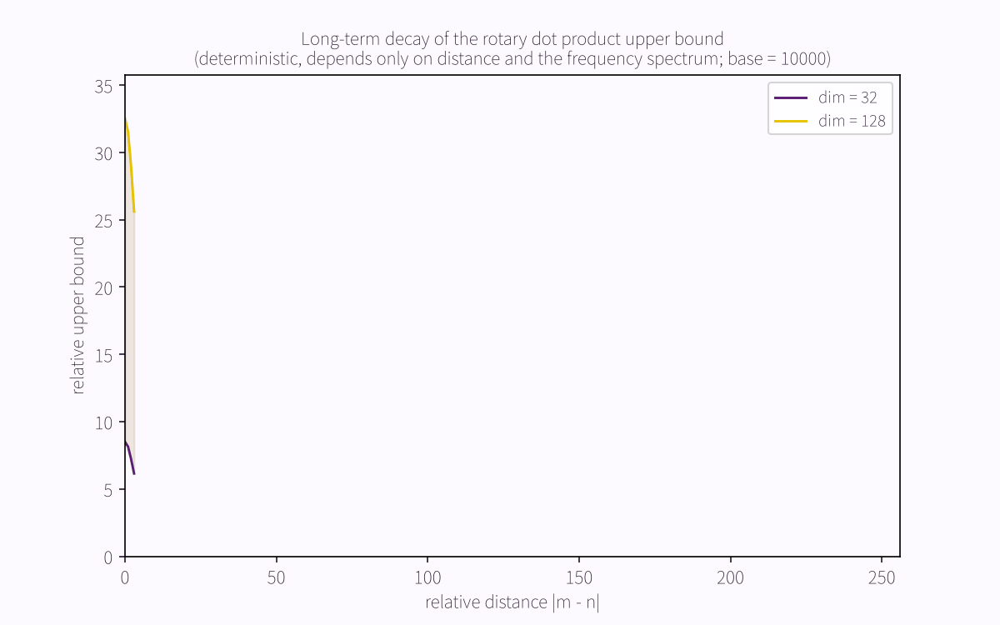

RoPE 是怎么被逼出来的
2026-09-01
旋转位置编码（RoPE）把每个 query 和 key 按它所在的绝对位置转过一个角度，转过之后，两个向量的点积就只依赖于它们之间的相对距离。这一句话生成了其余的全部。下面不是对方法的复述，而是把它一步步逼出来：每一步都由上一步的缺口决定，没有一处是选来的。假设读者熟悉点积、矩阵乘法和注意力的形状，不假设读者见过任何位置编码。
一、注意力看不见顺序
注意力分数是一个点积：
\[\mathrm{score}(q_m, k_n) = \frac{q_m \cdot k_n}{\sqrt{d}}.\]
点积读的是向量的内容，它没有一个入口能读到序列下标。把一句话的词重新排列而不改动词本身，所有两两之间的分数都不变。中文把这一点摆得很干净，因为中文靠语序承担意义，没有词形变化来兜底：
| 句子 | 它对世界的断言 |
|---|---|
| 猫 吃 鱼 | 猫是施事，鱼是受事 |
| 鱼 吃 猫 | 鱼是施事，猫是受事 |
同样三个词，对世界给出相反的断言。但 \(\mathrm{score}(\text{猫}, \text{鱼})\) 在两句里逐位相等。所以注意力对顺序视而不见，这是构造上的必然，不是一次疏忽。位置必须从外面注入。
最直觉的注入是加法：在点积之前给每个向量挂一个位置向量，\(x + p\)。把 \((x_a + p_m) \cdot (x_b + p_n)\) 展开，得到四项，其中三项把内容和位置搅在一起，之后再没有东西能把它们分开。网络被迫去学一个本来不保证存在的分离。
换一个做法：先把要求写成等式，再去找满足它的函数。
\[\langle f_q(x_m,\, m),\ f_k(x_n,\, n) \rangle = g(x_m,\, x_n,\, m - n).\]
把两边对着读。左边，\(f_q\) 只看得到 \(m\)，\(f_k\) 只看得到 \(n\)，因为注意力对 query 和 key 是各自独立地变换的。右边，结果只允许依赖 \(m - n\)。两个各自只知道自己绝对位置的局部操作，合起来必须只知道二者的差。这就是要找的函数需要满足的条件。
二、旋转恰好满足这个要求
平面上两个向量的点积是：
\[a \cdot b = |a|\,|b| \cos(\phi_b - \phi_a).\]
右边没有任何绝对角度，只有夹角之差 \(\phi_b - \phi_a\)。这是点积自身的性质，与注意力无关，与任何编码方案无关。
现在把 \(a\) 转过 \(t_1\)，把 \(b\) 独立地转过 \(t_2\)：
\[\phi_{b'} - \phi_{a'} = (\phi_b + t_2) - (\phi_a + t_1) = (\phi_b - \phi_a) + (t_2 - t_1).\]
令 \(t_1 = m\theta\)，\(t_2 = n\theta\)。转过之后两个向量的夹角，比原来正好差 \((n - m)\theta\)。第一节写下的要求，此刻是结构上被满足的，没有学习，没有近似。
在平面上，把向量看成复数，旋转就是乘上一个单位复指数：
\[f_q(x_m, m) = (W_q x_m)\, e^{i m \theta}, \qquad f_k(x_n, n) = (W_k x_n)\, e^{i n \theta}.\]
它们的内积给出：
\[\mathrm{Re}\!\left[(W_q x_m)(W_k x_n)^{*}\, e^{i (m-n)\theta}\right].\]
那个 \(e^{i(m-n)\theta}\) 不是手工插进去的，它从 \(e^{ia}e^{-ib} = e^{i(a-b)}\) 里掉出来。

有一条旋转矩阵的性质，现在先记下，第六节要用它：
\[R^{\mathsf{T}} R = I, \qquad \det R = 1, \qquad \|Rv\| = \|v\|.\]
这些不是为方法挑出来的便利，它们就是旋转在欧氏空间里的定义本身。范数对任意角度都保持，无论这个角度是对的还是错的。
三、这个主张比它看上去更强
把两个位置同时平移一个偏移量，发现夹角不变，这是弱读法。任何刚体变换都有这个性质，它证明不了多少。
真正的主张是：任意两对位置，只要它们的差相同，就给出相同的夹角，哪怕这两对之间毫无其他关系。它来自旋转的复合性质：
\[R_m^{\mathsf{T}} R_n = R_{n-m},\]
于是
\[(R_m q_m)^{\mathsf{T}} (R_n k_n) = q_m^{\mathsf{T}} R_{n-m} k_n.\]
\((m, n) = (7, 11)\) 和 \((m, n) = (131, 135)\) 除了差是 \(4\) 以外没有任何共同之处，它们的分数相等。弱读法只保证同一对向量平移后不变，强读法保证跨越几个数量级的、彼此无关的位置对之间也一致，这才是相对位置编码真正提供的东西。

四、一个频率不够
query 和 key 的头维度 \(d\) 远大于 \(2\)。把这个空间切成 \(d/2\) 个互相独立的平面，每个平面各转各的。得到的矩阵是块对角的，每一块是一个平面旋转：
\[R_m = \begin{pmatrix} \cos m\theta_1 & -\sin m\theta_1 & & \\ \sin m\theta_1 & \cos m\theta_1 & & \\ & & \ddots & \\ & & & \cos m\theta_{d/2} \\ \end{pmatrix}.\]
内积是线性的，它在正交子空间上逐块分解，于是第二节的论证在每个平面里各自成立。
每个平面要一个频率：
\[\theta_i = \mathrm{base}^{-2i/d}, \qquad i = 0, \dots, d/2 - 1.\]
值得问的是，\(\theta_i\) 为什么要随 \(i\) 变。用同一个频率显然更简单。原因是余弦有周期。只用一个频率，\(m\theta\) 会绕过 \(2\pi\)，不同的位置被映到几乎相同的角度上。序列短时这看不出来；到了当代模型处理的长度，位置 \(5\) 和位置 \(50005\) 单从旋转已无法区分。编码发生了混叠。
一组频谱解决它，方式和钟表一样。只有秒针表达不了小时，只有时针表达不了秒，两根针合起来，读数在任何一根都覆盖不了的范围里都是无歧义的。快平面（\(i\) 小，\(\theta_i\) 接近 \(1\)）分开相邻的位置，慢平面（\(i\) 大，\(\theta_i\) 接近 \(1/\mathrm{base}\)）在整条序列上几乎不动，分开遥远的位置。
两点提醒。平面的数目是 \(d/2\)，不是别的：\(d = 128\) 给 \(64\) 个平面，任何画成 \(16\)
个的图，画的是一个例子，不是正典的数目。base
的取值是经验的，它能用，第七节还会讲到它顺带产生的一条性质，但它不是从第一性原理推出来的；具体数值应当从模型配置里读，不要默认
\(10000\)，因为不同模型族不一样。
真的去构造整个 \(R_m\) 再调一次稠密矩阵乘法，是把内存和算力浪费在一个几乎全是零的矩阵上。等价的逐元素形式直接作用在成对的坐标上：
\[\begin{aligned} x'_{2i} &= x_{2i}\cos(m\theta_i) - x_{2i+1}\sin(m\theta_i), \\ x'_{2i+1} &= x_{2i}\sin(m\theta_i) + x_{2i+1}\cos(m\theta_i). \end{aligned}\]
同一组 \(\cos\) 和 \(\sin\) 在每个位置、每个头上都通用，所以它们只按最大序列长度算一次，之后反复查。落到实处，RoPE 就是一次查表加两次乘法：
# 平面 i 只用一对坐标和一组 cos/sin，不必构造整个 R_m。
# cos, sin 事先按 max_len 算好，此处只是查表与相乘。
x_even, x_odd = x[..., 0::2], x[..., 1::2]
out[..., 0::2] = x_even * cos - x_odd * sin
out[..., 1::2] = x_even * sin + x_odd * cos
五、两种约定，其中一种是沉默的
论文把相邻的两维配成一对：平面 \(i\) 占据 \((2i,\ 2i+1)\)。常见的实现把前后两半配对：平面 \(i\) 占据 \((i,\ i + d/2)\)，为了对齐，\(\cos\) 与 \(\sin\) 的表是复制而不是交错的。两者都是合法的旋转编码，它们在维度下标的一个置换下等价：
\[\pi(i) = 2i, \qquad \pi(i + d/2) = 2i + 1, \qquad i = 0, \dots, d/2 - 1.\]
孤立地看，选哪一个是任意的。张量一旦跨过一个边界，它就不再任意，因为训练好的权重把它受训时所用的那套约定编进了自己。不加置换就套用另一套约定，第二节的正交性会接手：形状合法，量级像模像样，语义是错的，一个错误也不抛。这种破坏是真实的，只有拿它和一个已知正确的结果去比，才看得出来。

六、错误的位置永远不报错
RoPE 在 key 进入 KV 缓存之前作用于它。缓存里的 key 是旋转之后的，它被算出来时所在的那个位置参照系，已经烤进了它的数值。切一个张量是在搬运数字，它不会把一次已经发生的旋转倒回去。
设一段长度为 \(p + s\) 的缓存被截断到只剩最后 \(s\) 项。活下来的 key 仍然带着来自绝对位置 \([p,\ p+s)\) 的旋转。若下一个 query 的位置改从截断后的缓存长度去取，它落在 \(s\)，而 key 还在 \(p + s\) 附近：
\[m - n \in (-p,\ s - p].\]
一旦 \(p\) 超过 \(s\)，每一个相对距离都是负的。query 被当作 key 在它前面那样去旋转，这是因果训练从不产生的排布。
现在回到第二节的 \(\|Rv\| = \|v\|\)。什么都没坏：没有异常，没有 NaN，没有形状不匹配，没有告警。向量还是它一直以来的长度。动的只有方向，而方向恰好是点积所读的东西。错误落在了决定注意力的那个量上，落在表示里唯一没有任何不变量守着的那一维。
一个大声失败的系统会告诉你它在哪里失败。这一个不会。这里的正确性，不能从没有报错推出来。
七、衰减是免费送的
把 \(q\) 和 \(k\) 的分量成对分组，把旋转后的内积写成一列复数项之和。对这个和做一次 Abel 变换，可以把它界住：
\[\left|\sum_{i=0}^{d/2-1} h_i\, e^{i(m-n)\theta_i}\right| \le \max_i |h_{i+1} - h_i| \sum_{j=0}^{d/2-1} |S_j|, \qquad S_j = \sum_{i=0}^{j-1} e^{i(m-n)\theta_i}.\]
真正衰减的量，是 \(|S_j|\) 对 \(j\) 取的平均。它只依赖相对距离和频谱，不依赖任何特定的 \(q\) 与 \(k\)。趋势是向下的，但不是单调的：界是一列振荡项之和，个别距离会高过它的邻居，而包络仍在下落。所以读单独一对距离在这里什么也证明不了，成立的是它在一段范围上的形状。
这和第四节合了拢。频谱是为了避免混叠才选的，衰减随它一起到来，没人点单。一个设计决定，两个有用的后果，这是构造并非任意的一个合理信号。

八、边界
上面的一切，讲的都是作为数学对象的这个编码。没有一句在讲一个训练好的模型会如何响应。
这条界很容易丢，值得攥住。旋转不知道一个句子是什么。像“误差在短序列上更糟”这样的话，是关于学到的权重和训练分布的断言，拿随机向量怎么测都立不起来，它需要对着具体那个模型去量。
这份推导确实立住的是：不变性成立，范数存活，两种约定在置换下一致、不置换则相左，一个与缓存旋转不自洽的位置会挪动注意力的输出。这些是编码的性质，无论哪个模型拿它去做什么，它们都成立。
对应的代码仓库在 github.com/yyfenghuang/RoPE-first-principle，每一条断言都配着一段能跑的代码。原始方法出自 Su 等人的 RoFormer1。